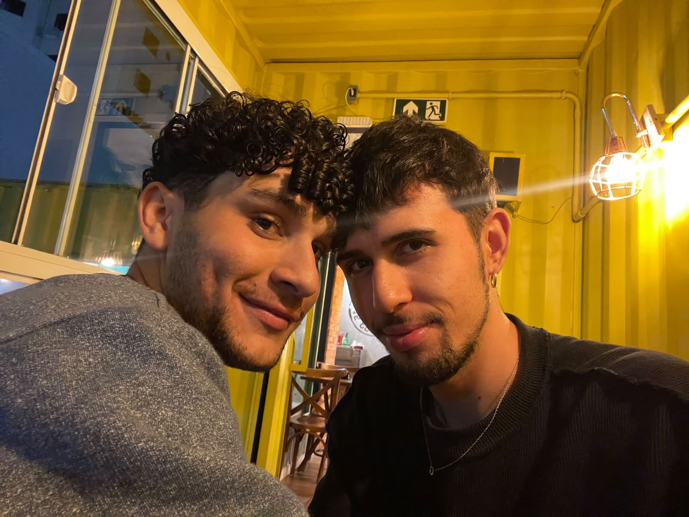
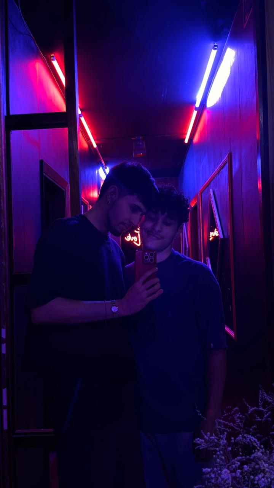

De Levi ❤️
"No meio de tantas histórias, encontrei a minha favorita."

Uma das minhas fotos favoritas de nós.

Um momento que guardo com carinho.
Espero que este seja apenas o começo.
Gabriel,
Eu queria fazer algo diferente para este Dia dos Namorados.
Talvez três meses pareçam pouco tempo para algumas pessoas, mas para mim foi tempo suficiente para descobrir o quanto gosto de estar ao seu lado.
É engraçado pensar que, entre tantas possibilidades, nós nos encontramos em uma livraria. Como se, no meio de tantas histórias, eu tivesse encontrado justamente a minha favorita.
Existem muitas coisas que eu amo em você, mas preciso admitir que o seu sorriso ocupa um lugar especial. É o tipo de sorriso que me desmonta sem esforço e consegue melhorar qualquer dia.
Obrigado pelas conversas, pelos momentos compartilhados e por tudo o que estamos construindo juntos.
Ainda estamos escrevendo a nossa história, mas eu gosto muito do capítulo que estamos vivendo agora.
Com amor,
Levi ❤️